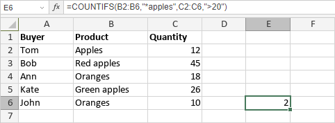

COUNTIFS funkcija
Funkcija COUNTIFS je jedna od statističkih funkcija. Koristi se za brojanje izabranih ćelija na osnovu više kriterijuma.
Sintaksa
COUNTIFS(criteria_range1, criteria1, [criteria_range2, criteria2]...)
Funkcija COUNTIFS ima sledeće argumente:
| Argument | Opis |
|---|---|
| criteria_range1 | Prvi izabrani opseg ćelija na koji se primenjuje criteria1. Ovo je obavezan argument. |
| criteria1 | Prvi uslov koji mora biti ispunjen. Primenjuje se na criteria_range1 i koristi se za određivanje ćelija u criteria_range1 koje se broje. Može biti vrednost uneta ručno ili sadržana u ćeliji na koju se pozivate. Ovo je obavezan argument. |
| criteria_range2, criteria2 | Dodatni opsezi ćelija i njihovi odgovarajući kriterijumi. Ovi argumenti su opcioni. Možete dodati do 127 opsega i odgovarajućih kriterijuma. |
Napomene
Prilikom navođenja kriterijuma možete koristiti džoker znakove. Znak pitanja "?" može zameniti bilo koji jedan znak, a zvezdica "*" se može koristiti umesto bilo kog broja znakova. Ako želite da pronađete znak pitanja ili zvezdicu, unesite tildu (~) ispred znaka.
Kako primeniti funkciju COUNTIFS.
Primeri
Slika ispod prikazuje rezultat koji vraća funkcija COUNTIFS.
